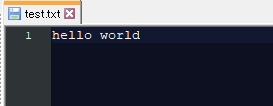
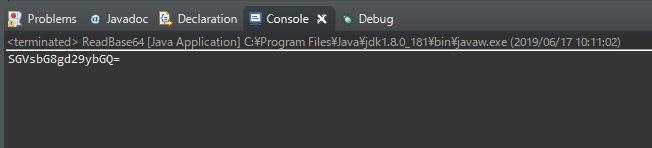
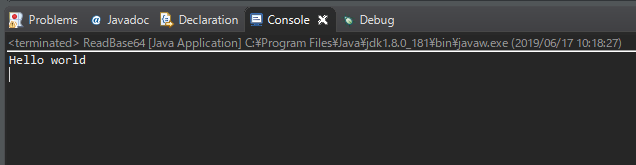

[Java] Base64をエンコード、デコードする方法
こんにちは。明月です。
この投稿はJavaでBase64をエンコード、デコードする方法に関する説明です。
Base64とは実は様々な複雑な説明がありますが、私が簡単に説明するとbyteタイプになっているbinaryデータをプログラム間にデータ交換をため、ascii文字に変換しているコードをbase64といいます。
つまり「byteデータやstreamデータをStringのタイプに変換すること、Stringの値はcharのデータ範囲を超えない(データ値が127)ものになっている」ということです。
先に簡単なファイルをIOで読み込んでbase64に変換します。
pcに「hello world」という値がある「test.txt」を準備しました。

そしてそれを読み込んだらbyteタイプのbinaryになります。そのbinaryをbase64に変換します。
import java.io.File;
import java.io.FileInputStream;
import java.util.Base64;
public class ReadBase64 {
// 実行関数
public static void main(String[] args) {
// test.txtファイルを読み込む
byte[] binary = getFileBinary("d:\\work\\test.txt");
// base64のライブラリからencodeToStringを利用してbinaryタイプ(byte[])をbase64(Stringタイプ)に変換する。
String base64data = Base64.getEncoder().encodeToString(binary);
// コンソールに結果を出力する。
System.out.println(base64data);
}
// ファイルを読み込む関数。
private static byte[] getFileBinary(String filepath) {
// Fileクラスを割当てする。
File file = new File(filepath);
// ファイルサイズでbyteバッファを割り当てする。
byte[] data = new byte[(int) file.length()];
// IOのストリームを取得する。
try (FileInputStream stream = new FileInputStream(file)) {
// ファイルを読み込む。
stream.read(data, 0, data.length);
} catch (Throwable e) {
e.printStackTrace();
}
// binaryを返却。
return data;
}
}
実行結果は下記とおりになります。

それが「hello world」のbase64コードです。
またbase64コードになっているデータを元のbinary(byte[])データに変換しましょう。
import java.util.Base64;
public class ReadBase64 {
// 実行関数
public static void main(String[] args) {
// 上でエンコードした「base64」データです。
String base64data = "SGVsbG8gd29ybGQ=";
// binaryデータ(byte[])にデコードする。
byte[] binary = Base64.getDecoder().decode(base64data);
// 結果をコンソールに出力する。
System.out.println(new String(binary));
}
}
実行結果は下記とおりになります。

base64タイプをbyteタイプに変換しました。byteデータをStringタイプに変換して出力すると「hello world」が出ます。
実はプログラム間に通信する時にbase64にエンコードやデコードにするとデータ長さが増えるので非効率です。
でも、base64を使うところはbinaryをStringに表現するところはイメージデータをStringデータで格納する時や、暗号化されたファイルをStringデータとしてデータをデータ通信する時にはよく使います。
ここまでJavaでBase64をエンコード、デコードする方法に関する説明でした。
ご不明なところや間違いところがあればコメントしてください。
- [Java] HttpConnectionを利用してウェブページを取得する方法2020/05/20 23:53:24
- [Java] Jsoupを利用してXMLファイル(HTML)を扱う方法2020/05/19 19:32:21
- [Java] 日付フォーマット(SimpleDateFormat)を使う方法2020/03/25 00:36:53
- [Java] サーブレット(Servlet)の環境でファイルアップロード(プログレスバーでファイルアップロード状態を表示する方法)する方法2020/03/24 00:48:21
- [Java] Spring環境でファイルアップロード(プログレスバーでファイルアップロード状態を表示する方法)する方法2020/03/22 23:15:12
- [Java] FTPに接続してファイルをダウンロード、アップロードする方法(FTPClient)2020/03/20 02:44:36
- [Java] JSPのSpring環境でschedulerのcronを使う方法2020/03/18 00:24:32
- [Java] POIを利用してExcelを扱う方法2020/03/17 01:48:00
- [Java] PDFを出力する方法(itextpdf)2020/03/13 00:47:31
- [Java] ログライブラリ(log4j)を使う方法2020/03/12 00:54:39
- [Java] Jsonタイプのデータを使う方法(Gsonライブラリ)2020/03/11 00:30:15
- [Java] Base64をエンコード、デコードする方法2020/03/09 10:24:01
- [Java] cmdコマンドを実行するための方法2020/03/06 18:01:10
- [Java] メール(javax.mail)を発送する方法2020/03/05 20:07:49
- [Java] クラス複製(Clonable, Reflection)2020/03/05 00:03:19
- [Python] 07. globalとnonlocal2020/06/03 20:34:49
- [Python] 06. 関数(function) - インライン関数、callbak、ラムダ(lambda)そしてクロージャ2020/06/02 20:51:22
- [Python] 05. コンプリヘンション(Comprehension)を使用する方法2020/06/01 19:38:58
- [Python] 04. 制御文(if, while, for, break, continue)とインデント2020/05/29 21:09:08
- [Python] 03. Pythonでリスト(list)とタプル(tuple)、そしてディクショナリ(dictionary)、セット(set)2020/05/27 18:49:08
- [Python] 02. データタイプ、変数宣言そしてコメントする方法2020/05/26 18:16:52
- [Python] 01. Python3をインストールする方法(Anacondaインストール)2020/05/25 19:02:44
- [Java] HttpConnectionを利用してウェブページを取得する方法2020/05/20 23:53:24
- [Java] Jsoupを利用してXMLファイル(HTML)を扱う方法2020/05/19 19:32:21
- [C#] 非同期ソケット通信(IOCP)-APMパターン2020/05/18 18:45:37
- [C#] 非同期ソケット通信(IOCP)-EAPパターン2020/05/15 19:31:02
- [C#] ソケット(Socket)通信をする方法2020/05/13 17:37:13
- [C#] NPOIを利用してExcelを読み込んで出力する方法2020/05/08 10:43:52
- [C#] NPOIライブラリを利用してエクセルファイルを生成する方法2020/05/07 01:49:01
- [C#] Geckoライブラリを利用してウェブスクレイピングする方法2020/05/05 00:52:26